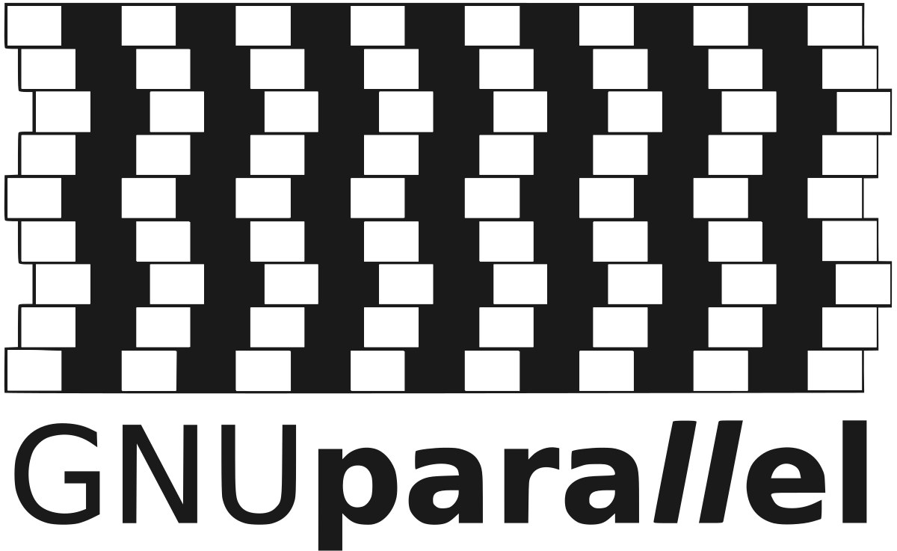

The current max wall-time of normal passive1 jobs on our job scheduler is 48 hours. In this post we will see how:
- Run parallel jobs with GNU parallel
- Resume a long job queue when it went over the hard limit of 2 computing days.
Running passive jobs
Let’s first see how to run a regular (non parallelized job) on our HPC.
#!/bin/bash -l
#SBATCH -N 1
#SBATCH -J fq_dl
#SBATCH --mail-type=begin,end,fail
#SBATCH --mail-user=xxx@uni.lu
#SBATCH --ntasks-per-node=1
#SBATCH -c 9
#SBATCH --time=0-18:00:00
#SBATCH -p batch
print_error_and_exit() { echo "***ERROR*** $*"; exit 1; }
module purge || print_error_and_exit "No 'module' command"
export SRUN_CPUS_PER_TASK=$SLURM_CPUS_PER_TASK
set -euo pipefail
fasterq-dump --split-files SRR8861487- Lines 1 to 9 are
slurmdirectives. - Lines 11-13 are from the HPC team, line 13 is very important since
slurmupgrade to version 22.05 (srundoesn’t inherit-c). - Line 15 makes BASH script more strict2
- Line 17 is the actual only command that download a large FASTQ paired-end run from SRA (took 9 hours and 7 minutes).
Parallel jobs
GNU parallel is a tool that allows to conveniently line up a series of commands to execute but with setting an upper limit to the number of jobs to run in parallel.

See this Gantt representation of 2 jobs in parallel for 8 machines (click to enlarge).
{kind=link}
Real example
Following the download of FASTQ (actually 74 paired-end samples), this single-end transcriptomics study had 96 cells identified per sample. The linked GitHub repository provided how to demultiplex those cells for one sample.
Correspondences UMI - samples
For this task, of course we need to perform the barcode split for all 74 samples. The supplied correspondences between UMI and names were in 96 lines files like:
AACGTGAT P4_LyM_B1_1
AAACATCG P4_LyM_B1_2
ATGCCTAA P4_LyM_B1_3
AGTGGTCA P4_LyM_B1_4
[...]
GATGAATC P4_LyM_B1_95
GCCAAGAC P4_LyM_B1_96On one side we have the SRA accession IDs from FASTQ filenames and on the other the UMI / sample names. To create the command lines, with use (only partial code shown) to match those
tibble(barcodes = fs::dir_ls("resources/GSE110009_RAW/", glob = "*.txt")) |>
mutate(GEO_Accession = str_extract(barcodes, "GSM\\d{7}")) |>
right_join(sra_table, join_by(GEO_Accession == `GEO_Accession (exp)`)) -> sra_geo
sra_geo# A tibble: 74 × 32
barcodes GEO_Accession Run `Assay Type` AvgSpotLen Bases BioProject BioSample Bytes `Center Name`
<fs::path> <chr> <chr> <chr> <dbl> <dbl> <chr> <chr> <dbl> <chr>
1 …283_P3-N.txt GSM2976283 SRR6… RNA-Seq 300 7.09e10 PRJNA4325… SAMN0845… 3.58e10 GEO
2 …4_P3-PT1.txt GSM2976284 SRR6… RNA-Seq 300 6.01e10 PRJNA4325… SAMN0845… 3.01e10 GEO
3 …5_P3-PT2.txt GSM2976285 SRR6… RNA-Seq 300 5.34e10 PRJNA4325… SAMN0845… 2.67e10 GEO
4 …6_P3-PT3.txt GSM2976286 SRR6… RNA-Seq 300 6.58e10 PRJNA4325… SAMN0845… 3.26e10 GEO
5 …7_P3-PT4.txt GSM2976287 SRR6… RNA-Seq 300 6.20e10 PRJNA4325… SAMN0845… 3.10e10 GEO
6 …_P4-LyM1.txt GSM2976289 SRR6… RNA-Seq 300 6.30e10 PRJNA4325… SAMN0845… 3.16e10 GEO
7 …291_P4-N.txt GSM2976291 SRR6… RNA-Seq 300 6.18e10 PRJNA4325… SAMN0845… 3.01e10 GEO
8 …2_P4-PT1.txt GSM2976292 SRR6… RNA-Seq 300 6.49e10 PRJNA4325… SAMN0845… 3.29e10 GEO
9 …3_P4-PT2.txt GSM2976293 SRR6… RNA-Seq 300 6.08e10 PRJNA4325… SAMN0845… 3.08e10 GEO
10 …1-1-lyM2.txt GSM2976294 SRR6… RNA-Seq 300 5.77e10 PRJNA4325… SAMN0845… 2.88e10 GEO
# ℹ 64 more rows
# ℹ 22 more variables: Consent <chr>, `DATASTORE filetype` <chr>, `DATASTORE provider` <chr>,
# `DATASTORE region` <chr>, Experiment <chr>, Instrument <chr>, LibraryLayout <chr>, LibrarySelection <chr>,
# LibrarySource <chr>, Organism <chr>, Platform <chr>, ReleaseDate <dttm>, create_date <dttm>,
# version <dbl>, `Sample Name` <chr>, source_name <chr>, `SRA Study` <chr>, disease_state <chr>, Type <chr>,
# patient_disease <chr>, PATIENT_ID <dbl>, Tissue <chr>Building up the full command lines
From this tibble we can use {glue} to create the commands that will be further run by parallel

glue logoglue::glue_data(sra_geo,
"mkdir -p split_{Run}; srun -c 4 -n1 --cpu-bind=cores perl resources/s01.Barcode_UMI_QC_per1w_V2.pl {Run}/{Run}_1.fastq.gz {Run}/{Run}_2.fastq.gz {barcodes} split_{Run}") |>
write_lines("xxxx/split_barcodes_cmd.txt")What we do here and to take the tibble and use an implementation of Literal String Interpolation (f strings in ). For every line, relevant column are inserted with the curly braces with the column name is used.
Finally, the 74 lines file split_barcodes_cmd.txt looks like:
mkdir -p split_SRR6662774; srun -c 4 -n1 --cpu-bind=cores perl resources/s01.Barcode_UMI_QC_per1w_V2.pl SRR6662774/SRR6662774_1.fastq.gz SRR6662774/SRR6662774_2.fastq.gz resources/GSE110009_RAW/GSM297628
3_P3-N.txt split_SRR6662774
mkdir -p split_SRR6662775; srun -c 4 -n1 --cpu-bind=cores perl resources/s01.Barcode_UMI_QC_per1w_V2.pl SRR6662775/SRR6662775_1.fastq.gz SRR6662775/SRR6662775_2.fastq.gz resources/GSE110009_RAW/GSM297628
4_P3-PT1.txt split_SRR6662775
[...] 70 more rowsGet parallel to handle multiple commands
The command xargs is on all servers and is very useful to build on command lines.
Something like this to update permissions on folders is handy:
However, even if there is the option -P it is not so easy to control how many tasks are run in parallel. The parallel command though is easier to learn, powerful but might not be installed on all HPC.
See now the launcher for the passive job of treating the 74 created commands using parallel:
#!/bin/bash -l
#SBATCH -N 1
#SBATCH -J split-barcode
#SBATCH --mail-type=begin,end,fail
#SBATCH --mail-user=xxx@uni.lu
#SBATCH --ntasks-per-node=12
#SBATCH -c 4
#SBATCH --time=2-00:00:00
#SBATCH -p batch
print_error_and_exit() { echo "***ERROR*** $*"; exit 1; }
module purge || print_error_and_exit "No 'module' command"
export SRUN_CPUS_PER_TASK=$SLURM_CPUS_PER_TASK
set -euo pipefail
module load lang/Perl
parallel --delay 0.2 --joblog slurm_split-${SLURM_JOB_ID} \
-j ${SLURM_NTASKS} "{}" :::: split_barcodes_cmd.txtSlurm directives
The interesting change is that we ask for 12 tasks with each 4 cores (lines 6 & 7). We must emphasise that we then request for 48 cores (see margin).
Line 17 is to have an updated Perl interpreter pre-compiled by our infrastructure.
Parallel options
Let’s split up the lines 19-203.
--delayis recommended for filesystem that could be slower than local SSD--joblogis the key part of this post, it register the completed execution of commands-jsets how many tasks are run in parallel, using here the 12 from line 6"{}"is theparallelplaceholder for where to insert command, here the full command is to be read4- Quadruple colon
::::means read entries from the filesplit_barcodes_cmd.txt
Joblog
The text log file from parallel looks like:
Seq Host Starttime JobRuntime Send Receive Exitval Signal Command
9 : 1695819029.000 7482.000 0 4945 0 0 mkdir -p split_[...]
3 : 1695819023.000 7819.000 0 4932 0 0 mkdir -p split_[...]
1 : 1695819021.000 10040.000 0 4757 0 0 mkdir -p split_[...]
[...]We see that the first command took longer (10040 seconds) so finished third in the execution.
Here the job took 24 hours and 23 minutes, no need to resume it, the booked time was sufficient.
Resuming parallel jobs
Once split the 74 samples output 7,008 FASTQ files to map against the genome.
Regarding the software for mapping and the node used, we can afford to run 4 mapping in parallel (turns out 5 or 6 could have been done).
Launcher script with exported BASH function
#!/bin/bash -l
#SBATCH -N 1
#SBATCH -J map-barcode
#SBATCH --mail-type=begin,end,fail
#SBATCH --mail-user=xxxx@uni.lu
#SBATCH --ntasks-per-node=4
#SBATCH --exclusive
#SBATCH -c 12
#SBATCH --time=2-00:00:00
#SBATCH -p batch
print_error_and_exit() { echo "***ERROR*** $*"; exit 1; }
module purge || print_error_and_exit "No 'module' command"
export SRUN_CPUS_PER_TASK=$SLURM_CPUS_PER_TASK
set -euo pipefail
doit() {
f="$1"
sample="$(dirname "$f")"
mkdir -p "$sample"
STAR --runThreadN "${SLURM_CPUS_PER_TASK}" --genomeDir GRCh37 --readFilesIn "$f" --readFilesCommand zcat \
--outFileNamePrefix star/"$sample"/ --outStd Log --outSAMtype BAM SortedByCoordinate \
--alignEndsType Local --quantMode GeneCounts --twopassMode Basic
}
export -f doit
#parallel --delay 0.2 --joblog slurm_mapping-${SLURM_JOB_ID} -j ${SLURM_NTASKS} "doit {}" ::: split_SRR*/*/*R1.clean.fq.gz
parallel --delay 0.2 --resume --joblog slurm_mapping-1185148 -j ${SLURM_NTASKS} "doit {}" ::: split_SRR*/*/*R1.clean.fq.gzSlurm directives
Nothing much than last time except we adapt to a more intense job, more more cores by task so less tasks per node. The --exclusive is to book the entire node (to get hands on the full RAM: 218.75 GB)
Defining a BASH function
A long line of parallel could be done and with Perl string replacements but the convenience is not meeting my expectations.
The parallel author himself is giving a nice answer on how to use a BASH function instead.
The function named doit is defined between lines 18 to 25 within curly braces.
At line 27, otherwise parallel won’t be able to use it
The string manipulation are done in BASH where I am more familiar with and we can break long lines with backslashes.
First pass of parallel
For which 48 hours were not enough: line 29.
Using the --joblog is mandatory so we log exactly which commands were done.
In 48 hours 5,877 mapping were performed (83.9%).
Second pass for the left over.
We are missing 1,131 mapping. I commented out the line 29 and made two important changes:
--resumeoption,parallelis then aware it needs to log in the joblog and skip commands already performed- Use not the jobid from
slurmbut the joblog file from the first pass:slurm_mapping-1185148.
Outcome
After 8 hours and 22 minutes, the last 1,131 mapping were done, giving the final mapping yes but also a complete job log:
7,008 + header.
Mapping took 48 + 8 = 56 hours and 22 minutes.
Credits
{kind=link}
Footnotes
interactive jobs are limited to 2 hours↩︎
See this article for explanations↩︎
The backslash
\indicates that the long line is split in two but interpreted as one↩︎For example, a more complex example for compressing text files, max 6 in parallel. The
{}is the place holder for all filenames that end with the.tsvextension. The compression will done bygzip. The triple colon:::to read from external commands, the quadruple::::like the split barcode is to read from a file.
↩︎parallel -j 6 "gzip {}" ::: *.tsvArtistic picture by Pop & Zebra from Unsplash↩︎